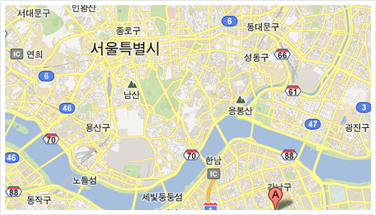

О конференции
Конференция под кодовым названием «КСО и УР» - это мероприятие, объединяющее прогрессивных предпринимателей, тех, которые осознают необходимость работать по-новому. “А по-новому – это как?” –спросите вы. Ответы – в программе конференции. 12-13 ноября. Харьков. Отель «Харьков Палас». www.adjutor.org.ua/conference
Ключевые вопросы конференции “Корпоративная социальная ответственность и устойчивое развитие”:- Бизнес и устойчивое развитие общества: оценка долгосрочных перспектив
- Эволюция маркетинговых подходов: этический бизнес, зеленый бизнес, синяя экономика и другие мало знакомые понятия
- Как бизнес выигрывает от реализации концепции устойчивого развития?
- Насколько важно инвесторам вкладывать деньги в социально ответственный бизнес?
- «Взросление потребителя» и зрелость бизнеса в условиях КСО
- Социальная ответственность бизнеса и создание мотивационной среды общества
- Улучшение мотивационной среды на предприятии за счет реализации программ КСО
- Качество продукции и качество управленческих процессов в условиях КСО
- КСО и благотворительность бизнеса: соотношение понятий
- Международные практики КСО: благотворительность, социальный маркетинг, корпоративное волонтёрство, социальное спонсорство, социальное предпринимательство, социальные инвестиции
- Практика создания и деятельности корпоративного благотворительного фонда: юридические и финансовые аспекты
- Роль инноваций в развитии компании и общества
- Международные программы поддержки бизнеса
- Компании нацеленные на долгосрочное развитие (sustainability) и социальную ответственность (social responsibility)
- Учредители благотворительных фондов
- Организации, продвигающие идеи устойчивого развития
- Ассоциации содействия развитию бизнеса
- Инновационные компании
- Производители экологических видов продукции
- Инвестиционные и финансовые учреждения, благотворительные фонды
- Специалисты: директора по развитию, специалисты маркетинговых коммуникаций и связей с общественностью, разработчики программ КСО, маркетинговые аналитики, HR-специалисты, социальные предприниматели
Место проведения
Конференция НАЗВАНИЕ будет проходить в гостинице «Харьков Палас»по адресу: пр. Правды,2, г.Харьков 61058, Украина 
Для участников Конференции бизнес-отель предоставляет бесплатный wi-fi Интернет, бесплатные телефонные звонки на городские номера по г.Харьков и на все мобильные номера (каждый конференц-зал, в котором будут работать участники конференции, оборудован телефонным аппаратом), а также бизнес-отель предоставляет специальные цены для проживания участников конференции.
Предварительная программа конференции
12 ноября (вторник) — Устойчивое развитие и бизнес
9:30 – 10:00
10:00 – 10:15
10:15 – 10:40
11:30 – 11:45
11:45 – 13:00
13:00 – 14:00
14:00 – 15:30
15:30 – 15:45
15:45 – 17:00
17:00 – 17:15
14.00 - 15.30
15.45 – 17.15
17:15 – 19:00
Регистрация участников
Открытие конференции, приветствие
Сессия 1. «Устойчивое развитие и Синяя экономика»
Панельная дискуссия: Эволюция маркетинговых подходов: этический бизнес, зеленый бизнес, синяя экономика и другие мало
знакомые понятия (30 мин)
Кофе пауза
Сессия 2. «Устойчивое развитие общества в стратегии предприятия»
Панельная дискуссия: Выигрыш бизнеса при реализации концепции устойчивого развития (30 мин)
Обед
Сессия 3. «КСО и благотворительность бизнеса: какая разница?»
Панельная дискуссия: Корпоративная социальная ответственность и благотворительность бизнеса как факторы гармонизации
общества (30 мин)
Кофе пауза
Сессия 4. «Как это работает: Создание корпоративных фондов»
Кейс №1: Примеры практиков 20 мин
Кейс №2: Примеры практиков 20 мин
Практическая консультация: Юридические и финансовые аспекты благотворительности бизнеса (20 мин)
Фильм (10 мин)
Итоги первого дня
Мастер класс для студентов и участников конференции: Никулишина Татьяна «Привлечение финансовых средств
в благотворительные фонды»
Мастер класс для студентов и участников конференции: Демин (Сплат) Бизнес без рекламы: ориентация на людей
Коктейль/Фуршет
10:00 – 10:15
10:15 – 11:30
11:30 – 11:45
11:45 – 13:00
13:00 – 14:00
14:00 – 15:30
15:30 – 15:45
15:45 – 17:15
14.00 -15.30
15.45- 17.15
17:15 – 17:30
17:30 – 19:00
Открытие второго дня, презентация программы
Сессия 5. Презентации проектов: образование, экология, инновации
Проект №1
Проект № 2 (___)
Проект № 3
Кофе пауза
Сессия 6. Презентации проектов: здравоохранение, спорт, искусство, музыка
Проект №1
Проект №2 (Воркаут, Денис Минин)
Проект №3
Обед
Сессия 7. «Проблемы и перспективы межсекторного партнерства: опыт разных стран»
Панельная дискуссия: «Маркетинг территорий и развитие знаковых предприятий и бизнесов» (30 мин)
Кофе пауза
Сессия 8. «Международное сотрудничество и развитие бизнеса: фокус на устойчивое развитие»
Кейс №1 (Массадур)
Кейс №2 ( )
Кейс №3 Анализ результатов «Оценки годовых отчетов» - студенческий
срез и экспертов (ИСА)
Панельная дискуссия: Компании и организации, предлагающие инновационные подходы для решения современных экологических и социальных проблем
Мастер класс для студентов «Оценка годовых отчетов компаний-участников» (аниматор Ярошенко О.)
Мастер класс для участников конференции и студентов «Разработка программ КСО и вовлечение в нее работников предприятия» (Центр развития программ КСО)
Подведение итогов конференции
Коктейль/Фуршет
Условия участия в конференции
Место проведения:
Гостиница «Харьков Палас»
Адрес: пр. Правды,2
Харьков 61058, Украина
Тeл.: +38 (057) 766 44 00
Email: info@kharkiv-palace.com

Стоимость участия (цены указаны с учетом всех налогов)
Регистрационный взнос:
До 27.09.134 500 грн / 17100 руб. / 550 USD - один участник от компании,
4 050 грн / 15500 руб. / 500 USD - более одного участника от компании (за каждого
из участников)
4 900 грн / 18600 руб. / 600 USD - один участник от компании,
4 500 грн / 17100 руб. / 550 USD - более одного участника от компании (за каждого
из участников)
В стоимость входит участие во всех мероприятиях конференции, рабочие материалы, on-line доступ к итоговым материалам, обеды и фуршеты в рабочие дни, кофе-паузы в перерывах между рабочими сессиями.
Примечание:
- Проживание в гостинице и трансфер из аэропорта, ж/д или автовокзала не входят в регистрационный взнос.
- В случае отказа зарегистрировавшегося делегата от участия в конференции после 01 ноября 2013, регистрационный взнос возврату не подлежит. Все запросы об отмене регистрации подаются только в письменном виде.
- Замена делегата на другого представителя компании допускается без дополнительной оплаты и каких-либо штрафных санкций.
- Если компания не имеет возможности принять участие в конференции, но заинтересована в получении on-line доступа к итоговым материалам конференции, пожалуйста, отметьте это в регистрационной форме.
Регистрация
Для участия в конференции необходимо заполнить регистрационную форму
и направить её по email или по факсу +38 056 123-45-67,
затем дождаться получения счета и оплатить участие.
По вопросам регистрации просьба обращаться по тел. (099) 123-45-676
Скачать
регистрационную форму
Спикеры

Константин Константинович эксперт
Константин Константинович эксперт
Константин Константинович эксперт
Константин Константинович эксперт